В этой главе мы познакомимся с самыми основами работы в R и начнем прям от Адама — с установки и интерфейса. Если у вас уже есть R и RStudio и вы хотите сразу стартовать с работы в среде, прыгайте сюда.
2.1 Сверхкраткая история R
R придумали Росс Ихака (Ross Ihaka) и Роберт Джентльмен (Robert Gentleman) в 1992 году в Департаменте статистики Университета Окленда (Department of Statistics at Auckland, Иллюстрация J.5). Изначальная цель — разработать язык, чтобы преподавать вводный курс статистики. За основу был взят язык S, разработанный Bell Laboratories, и в 1994 году была завершена первая версия (Ross, n.d.).
Через пару лет разработчики перестали справляться с [электронными] письмами о багах и предлагаемых улучшениях, и в 1997 году R становится частью GNU Project (Ross, n.d., p. 17). В этом же году K. Hornik и F. Leisch создают на базе Венского технического университета (Technische Universität Wien) репозиторий CRAN (The Comprehensive R Archive Network) для совместной работы «ядерной» группы разработчиков (core team). В феврале 2000 года выходит первая стабильная версия языка.
Сегодня R развивается международной командой исследователей вычислительной статистистики (R Project) и поддерживается некоммерческой организацией R Foundation.
Почему R так называется?
Это шутка авторов. «R» обозначает первую букву их имён (Robert и Ross) (Ross, n.d., p. 12).
2.2 Обзор R
R является свободным программным обеспечением, распространяемым по лицензии GNU General Public License. Создававшийся изначально как язык для статистических вычислений, он впоследствии существенно расширил свои возможности, и теперь его можно считать полноценным языком программирования1. Хотя R и не является языком программирования общего назначения2 (general-purpose programming language), на нём можно:
- предобрабатывать и анализировать данные
- строить стильные и интерактивные визуализации
- создавать динамические отчеты, презентации и дашборды
- писать статьи, книги, сайты и приложения
- …
Для R написано бесчисленное множество пакетов (Иллюстрация 2.2), которые позволяют работать с самыми разными данными (поведенческими, опросниковыми, биологическими, лингвистическими, географическими и др.) и самыми разными статистическими методами (от t-теста до структурного моделирования). Количество доступных на CRAN пакетов экспоненциально растет с каждым годом.
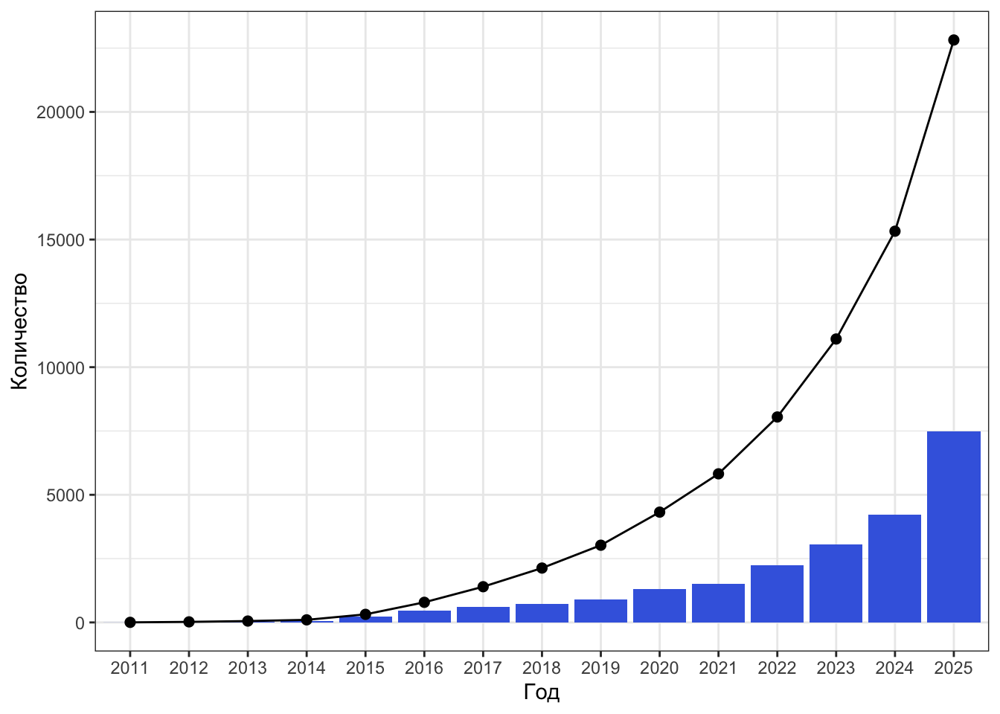
R является высокоуровневым, интерпретируемым, мультипарадигмальным3 языком программирования с динамической типизацией4. У него очень простой, практически интуитивный, синтаксис, в результате чего — низкий порог вхождения по сравнению с другими языками программирования.
R широко используется в академической среде исследователями социальных и гуманитарных наук, и, пожалуй, его можно назвать стандартом анализа данных де-факто в этих областях. Конечно, если его сравнивать со статистическими программами, предоставляющими графический интерфейс (Statistica, SPSS, JASP, Jamovi и др.), то порог вхождения тут будет выше, однако R позволяет организовать работу с данными так, чтобы она была воспроизводима, чем, увы, не могут похвалиться большинство программ с графическими интерфейсами.
Кроме того, реализация статистических методов в R часто требует копнуть в суть масих методов чуть глубже, чтобы корректно провести анализ, что, с одной стороны, может создать некоторые трудности, но, с другой стороны, мотивирует лучше разобраться в метода анализа данных, а значит, более осознанно их использовать.
В общем, R — это стильно, можно и полезно.
2.2.1 R vs Python

В мире дата-аналитики существует великое противостояние двух языков — R и Python. На мой взгляд, довольно бессмысленное.
— Я не могу решить, делать мне на R или на Python…
— Какая к черту разница! Главное — делай!
Курилка на Армянском переулке около Департамента психологии НИУ ВШЭ
2010-е гг.
Хотя этот диалог случился, можно считать, довольно давно, он, как мне кажется, не утратил своей актуальности. Python — язык программирования общего назначения, R — больше специализирован на анализе данных. Первый имеет более широкие возможности, второй — удобнее для аналитики. Для тех, у кого нет опыта программирования и кому сложно даются технические области, думаю, R будет проще. На мой взгляд, в Python от аналитики отвлекает ярко выраженное ООП (объектно-ориентированное программирование), которое в R спрятано глубоко под капот. Аналитика же по своей сути — это диалог с данными, и в R его выстроить гораздо проще. Исходя из этого мой критерий следующий: для аналитики — R, для всего остального — Python.
Безусловно, это крайне субъективный критерий, и далеко не всем он покажется уместным и работающим. Есть другой — в R гораздо более интуитивно реализована работа с данными (tidyverse очень сильно выигрывает в интуитивности у pandas), как и пакеты для сложных методов анализа (психометрический анализ, SEM, смешанные линейные модели и др.).
Впрочем, если вы открыли эту книгу, предполагаю, что вы заинтересованы именно в R, поэтому позволю себе свернуть обсуждение великого противостояния, и перейти к сути.
2.3 Установка
Мы сейчас будем устанавливать все программы…5
Последовательность установки
Нам необходимо будет установить две вещи — R и RStudio. Во избежании возможных ошибок необходимо их ставить именно в этом порядке: сначала — R, затем — RStudio. Иначе RStudio может не найти R на компе и будет ругаться.
2.3.1 Установка R
Установить R можно с репозитория основного репозитория CRAN (The Comprehensive R Archive Network). Существуют версии R для всех трёх наиболее распространенных десктопных операционных систем:
В целом, установщики операционных систем обычно хорошо справляются со своей задачей, и в 90% случаев всё встаёт без багов. Однако ниже я оставлю некоторые комментарии о проблемах, с которыми сталкивался сам или о которых говорили знакомые и коллеги.
2.3.1.1 Win
Ниже есть пример установки R на Win (Иллюстрация 2.3), если вдруг у вас возникли какие-то проблемы при установке. Скорее всего всё прошло достаточно ровно.
Самая частая проблема — имя пользователя на кириллице. Компьютер вообще достаточно плохо переваривает кириллические символы. Особенную же проблему составляют такие символы в путях к файлам. Поскольку на Win папка пользователя называется именем пользователя, то в случае кириллического имени, естественно, её имя будет на кириллице. Это можно пережить, перезадав некоторое дефолтные пути в настройках, однако если есть возможность переименовать пользователя и папку, я бы рекомендовал это сделать. Ну, так, чтобы не было неожиданных внезапностей.
2.3.1.2 macOS
Apple silicon vs Intel Macs
Обратите внимание на разные версии для Apple silicon (M1) и Intel Macs.
Ниже есть пример установки R на Mac (Иллюстрация 2.4), если вдруг у вас возникли какие-то проблемы при установке.
Тут в 99.9% случаев всё ровно. Бывает, что уже в процессе работы некоторые пакеты жалуются на недоустановленное что-то или на какие-либо несовместимости, но это случается невероятно редко и обычно достаточно легко лечится.
2.3.1.3 Linux
Обилие дистрибутивов
Конечно, если вы работете на Linux, то прекрасно знаете о дистрибутивах и их особеностях. Однако отмечу, что на разные дистрибутивы Linux устанавливаются разные версии.
Примеры на Linux
Я работаю на Ubuntu (ВЕРСИЯ), поэтому примеры для Linux будут приводится именно для этого дистрибутива. На других дистрибутивах могут быть свои особенности.
Ниже есть пример установки R на Linux (Ubuntu) (Иллюстрация 2.5), если вы только начинаете знакомство с Linux и у вас возникли какие-то проблемы при установке.
Если вы пользователь Linux, значит R вы, вероятно, ставите через Terminal. Например, с помощью такой команды:
sudo apt install r-base-devСкорее всего, всё пройдет хорошо, и базовый R будет работать. Проблемки могут случиться чуть дальше, когда мы будем ставить дополнительные пакеты, в которых будет идти основная наша работа — R может не найти некоторые системные пакеты. Такая проблема возникла у меня возникла (на Ubuntu 22.04) — помогла команда ниже:
sudo apt-get install -y libxml2-dev libcurl4-openssl-dev libssl-dev libfontconfig1-dev libharfbuzz-dev libfribidi-dev linfreetype6-dev libpng-dev libtiff5-dev libjpeg-devaСначала мы будем знакомиться с базовым R и работать только в нём, но имейте в виду, что тут есть некая команда, которая может пригодиться.
2.3.2 Установка RStudio
Казалось бы, мы поставили R, и можно было бы на этом закончить. И это, в общем-то, правда — можно работать и просто в R. Однако для упрощения и увеличения приятности работы стоит установить RStudio6. Установочные файлы лежат тут. На всякий случай, прикреплены примеры установки RStudio для Win, macOS и Linux (Иллюстрация 2.6).
RStudio — это интегрированная среда разработки (IDE) (подробнее см. тут). Она расширяет возможности R, предоставляет более юзабельный интерфейс для взаимодействия с языком и в целом делает работу с R радостной и приятной.
RStudio это не единственная среда для работы с R, но определенно самая удобная и популярная, поэтому мы будем пользоваться именно ею. RStudio является IDE, разработанной специально для работы в R, однако это вовсе не значит, что в ней нельзя использовать другие языки программирования. Например, книжка, которуя вы сейчас читаете, написана с использованием R, Python, HTML, SASS, JavaScript, YAML и других языков — при этом вся работа велась в RStudio. Вот такая мощная вещь.
2.3.2.1 Что такое IDE?
Интегрированная среда разработки (IDE, integrated development environment) — это специальная программа, которое предоставляет широкий спектр возможностей для разработки программного обеспечения. Возможно, вы слышали такие слова, как PyCharm или Visual Studio Code — это всё варианты IDE.
Обычно IDE содержит несколько ключевых компонентов:
- текстовый редактор для написания скриптов
- транслятор языка
- отладчик (debugger)
- средства автоматизации сборки (build automation tools)
Обычно IDE позволяют работать с несколькими языками программирования, но бывают и специализированные.
И хотя всё ещё присутствует холивар относительного того, является ли R языком программирования, который отмечался в сносках, RStudio однозначно можно назвать полноценной IDE, так как разработка в ней вполне может вестить. Пример продукта разработки прямо перед вами — книжка, которую вы сейчас читаете.
2.3.3 Posit Cloud
В подавляющем большинстве случаев работа в R происходит на десктопной версии. Однако это не единственный вариант. Например, если вам нужно резко, быстро и несложно обработать небольшие данные, а вы в отпуске без своего любимого персонального компа, можно поработать в облачной версии RStudio — Posit Cloud.
В Posit Cloud используются RStudio Projects7, интерфейс полностью совпадает с десктопной версией RStudio, доступны дополнительные пакеты. Однако объем доступной оперативной памяти существенно ограничен, что, безусловно, может создать существенные сложности. Тем не менее, такой вариант работы вполне можно рассмотреть в каких-то ограниченных условиях.
2.4 Интерфейс R
На самом деле, RStudio можно было и не ставить, так как R предоставляет собственный графический интерфейс для работы. Его можно открыть, кникнув на иконку R в списке программ вашего компа (Иллюстрация 2.7). Однако как вы можете видеть, он довольно скудный (Иллюстрация 2.8).

Здесь есть всего два окна: справа — консоль, слева — скрипт. В скрипте пишется код, в консоли он выполняется. Иногда еще открываются окна с графиками. Стильно, можно, минималистично — весьма по-программистски. Однако в RStudio работу можно обустроить гораздо удобнее и нагляднее, поэтому не будем останавливаться здесь долго и сразу же перейдем к изучению установленной IDE.
2.5 Интерфейс RStudio
Чтобы открыть RStudio, надо найти её иконку (Иллюстрация 2.9) в списке программ на вашем компе. Открыв программу, вы увидите что-то такое (Иллюстрация 2.10).

Нет первого окна
При самом первом открытии RStudio у вас может отображаться не четыре окна, как на скриншоте выше (Иллюстрация 2.10), а только три — второе, третье и четвертое. Чтобы первое окно появилось, нажмите сочетание клавиш Ctrl+Shift+N (Command+Shift+N на Mac) или воспользуйте кнопкой в левом верхнем углу и выберите R Script.

У меня не тот цвет
Не беда. RStudio можно кастомизировать под себя, в том числе задать разные темы и стили оформления кода. Об этом будет ниже.
Что же у нас есть в представленных окнах?
Code Editor- Это редактор кода. По сути это не более чем обычный блокнот, встроенный в IDE, с той лишь разницей, что некоторые слова подкрашиваются по определенным правилам. В этом окне мы будем писать текст скрипта.
- В этом же окне будут открывать скриптовые файлы, которые были вами или кем-то ранее написаны. Скриптовые файлы языка R получают расширение
.R, то есть какой-то скрипт будет называтьсяscript.R, однако это всё ещё обычный текстовый файл, который можно откыть в любом текстовом редакторе (типа Notebook или TextEdit). - Скрипт состоит из команд, которые мы хотим выполнить, но в самом скрипте они выполнить не могут, поэтому нам нужна консоль.
Console8- В консоли также можно писать команды и выполнять их прямо на месте — получается максимально интерактивный режим работы. Однако после выполнения команды нигде не сохраняются9.
- Получается, что в работе над анализом данных удобно разнести задачи между консолью и редактором кода: в редакторе мы пишем команды, в консоли — их выполняем.
- В этом окне есть несколько вкладок.
- Главная — это
Environment. Это наше [глобальное] окружение. Здесь будут отображаться объекты, с которыми мы работаем — переменные, датасеты, результаты моделирования и др. - На вкладке
Historyхранится история выполнения команд, иногда она может пригодится, но собственно вкладкой пользуются, скорее, редко. - Другие вкладки отсюда мы использовать не будем.
- Главная — это
- Это очень полезное окно.
- Во-первых, здесь есть вкладка
Files, с помощью которой можно гулять по папкам и файлам. В первое время мы не будем активно обращать на неё внимание, однако когда перейдем к разговору о работе с данными и проектах, она нам будет очень важна. - На вкладке
Plotsбудут отображаться построенные графики. - Вкладка
Packagesпомогает сориентироваться в установленных и подключенных пакетах10. - В
Helpмы будем обращаться часто — уже буквально через несколько мгновений изучим эту вкладку на практике. Здесь отображается документация. К ней стоит обращаться, если возникают какие-либо проблемы и непонятки с тем, как использовать ту или иную функцию. ViewerиPresentation— редко используемые вкладки, по крайнем мере, в первое время работы. Они необходимы, когда вы создаете какие-либо материалы в R (презентации, сайты, отчеты, книжки и др.)
- Во-первых, здесь есть вкладка
2.5.1 Кастомизация RStudio
После некоторого времени работы в RStudio, вы можете обнаружить, что предлагаемые по умолчанию конфигурация и оформление вам не очень удобны. Скажем, вы как истинный программист работаете по ночам, и дефолтная светлая тема оформления вам крайне больно бьет по глазам, и вы хотите расположить консоль рядом со скриптом, чтобы видеть результаты выполнения команд примерно на том же уровне, что и строки кода. Всё это выполнимо.
Здесь мы рассмотрим две, пожалуй, ключевых вещи, которые можно настроить — окна и тему. В остальных возможностях, я уверен, вы сможете разобраться самостоятельно, понажимав на всякие кнопки или изучив RStudio User Guide.
2.5.1.1 Тема
Чтобы настроить тему RStudio, необходимо проследовать по пути Tools → Global Options → Appearance. Откроется следующее окно (Иллюстрация 2.11). В нем можно выбрать шрифт, его размер, тему самого RStudio и тему редактора кода. Через кнопку Add... можно даже добавить собственные темы, если вам не нравится ни одна из предложенных.

2.5.1.2 Расположение окон и их содержимое
Чтобы настроить расположение и содержимое окон, необходимо проследовать по пути Tools → Global Options → Pane Layout. Откроется следующее окно (Иллюстрация 2.12). Логика проста: здесь тоже четыре области, соответствующих окнам интерфейса RStudio, и в каждом можно выбрать, что должно отображаться. Через Add Column можно добавить ещё одну колонку, если вы, скажем, работаете на большом мониторе в двух скриптах параллельно.

2.6 Работа в консоли
Красоту навели — пора бы и серьезными вещами заняться.
Мы начнем работу с R в консоли, хотя такой вариант практически на практике не применяется. Тем не менее, во-первых, надо познакомиться с тем, как консоль работает, а во-вторых, избавиться от «страха консоли», если вдруг он у вас есть.
Когда вы открыли RStudio, R вывел вам в консоль приветственное сообщение примерно такого содержания:
R version 4.4.0 (2024-04-24) -- "Puppy Cup"
Copyright (C) 2024 The R Foundation for Statistical Computing
Platform: x86_64-apple-darwin20
R is free software and comes with ABSOLUTELY NO WARRANTY.
You are welcome to redistribute it under certain conditions.
Type 'license()' or 'licence()' for distribution details.
Natural language support but running in an English locale
R is a collaborative project with many contributors.
Type 'contributors()' for more information and
'citation()' on how to cite R or R packages in publications.
Type 'demo()' for some demos, 'help()' for on-line help, or
'help.start()' for an HTML browser interface to help.
Type 'q()' to quit R.В принципе, его можно проигнорировать — в нем некая техническая информация. Всё это можно достать отдельно при необходимости. Сейчас сосредоточимся на том, что отображается после сообщения — маленькая неприметная, но важнейшая стрелочка (Иллюстрация 2.13). Она обозначает, что R сейчас ничего не делает и ожидает новую команду.
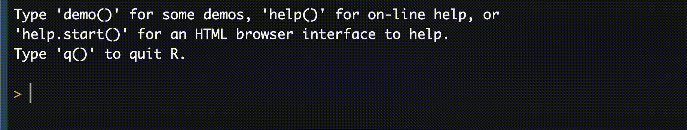
Это дефолтное состояние консоли. Чтобы выполнить какую-либо команду, надо напечатать её в консоли и нажать Enter. Например, вы хотите напечатать в консоль 0. Для этого есть команда (функция) print(). Введя в консоль print(0) и нажав Enter, мы получим следующий результат (Иллюстрация 2.14).
Enter
Однако состояние со стрелочкой не единственное. На месте стрелочки может стоять плюсик. Это значит, что R нашел окончание команды, и ожидает, когда вы её допишете, чтобы он мог отправить её выполняться. Например, вы всё ещё хотите напечатать в консоль 0, но забыли закрыть скобку в функции print(). Это будет выглядеть так (Иллюстрация 2.15). Если после «плюса» дописать скобку и нажать Enter, то команда выполнится.
Enter
Если вы не хотите, чтобы команды выполнялась, то её можно прервать, нажав клавишу Esc (Иллюстрация 2.16).
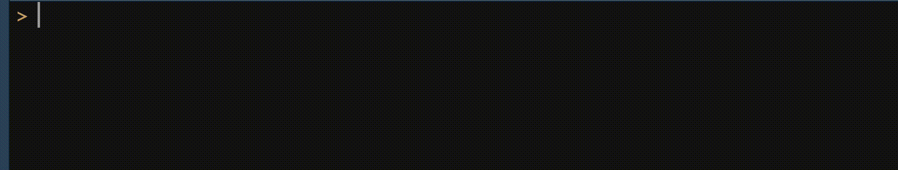
Esc
Есть ещё одно состояние, когда не отображается ни стрелочка, ни плюс. Это значит, что вы дали R большую сложную команду, и он теперь занят — вот прямо сейчас её выполняет. Надо подождать, и консоль вернется в дефолтное состояние.
Ура, мы разобрались, что происходит в консоли, теперь приступим собственно к R.
Далее: код
Отображать выполнение кода с помощью гифок, конечно, крайне неудобно. Далее будет использоваться следующий формат:
print(0)[1] 0Покрашенное разными цветами — это сам код. Ниже однотонное — результат его выполнения, отображаемый в консоли.
2.6.1 Арифметические операции
В R присутствуют все стандарные арифметические операции — сложение (+), вычитание (-), умножение (*), деление (/) и возведение в степень (^). Выполняются весьма предсказуемо.
2 + 2[1] 410 - 3[1] 74 * 6[1] 248 / 5[1] 1.62 ^ 10[1] 1024Есть также два специальных деления — целочисленное (%/%) и взятие остатка от деления (%%).
5 %/% 2[1] 25 %% 2[1] 1Задание 2.1 Вычислите в R:
- \(32 + 64\)
- \(-11 + 91\)
- \(5 - 7\)
- \(18 - 47\)
- \(9 \cdot 12\)
- \(616 : 55\)
- \(25 \mod 6\)
- \(8^{3}\)
- \(-2^{-2}\)
- \((-2)^{-2}\)
Оператор \(\mathrm{mod}\) обозначает взятие остатка от деления.
Решение.
32 + 64[1] 96-11 + 91[1] 805 - 7[1] -218 - 47[1] -299 * 12[1] 108616 / 55[1] 11.225 %% 6[1] 18 ^ 3[1] 512-2 ^ -2[1] -0.25(-2) ^ -2[1] 0.25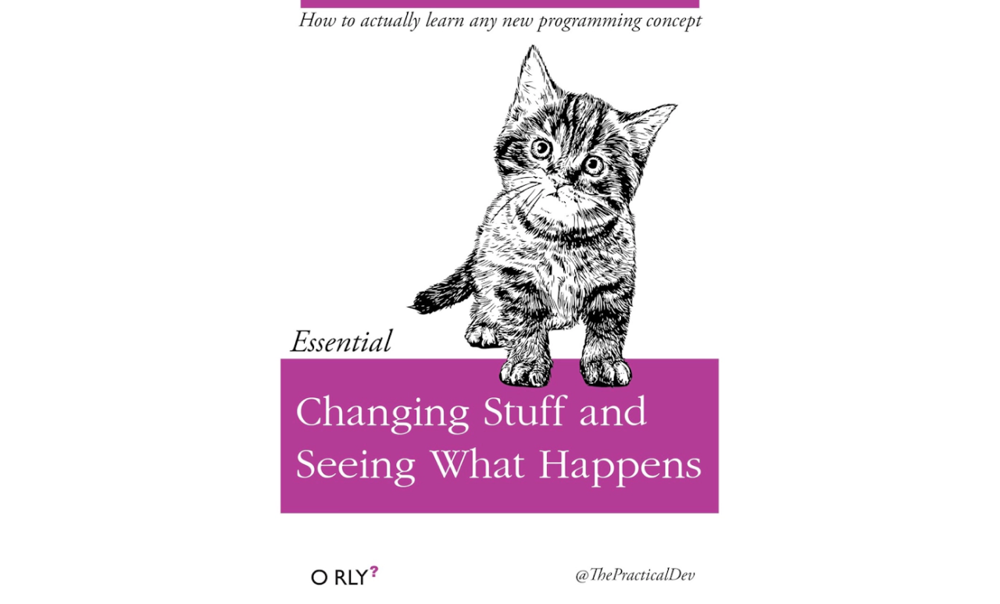
В R есть скобки — () — их назначение такое же, как и в математике. Порядок выполнения арифметических действий (он же приоритет операторов, operator precedence) тоже как в математике11.
4 * 4 + 4[1] 204 * (4 + 4)[1] 325 / 5 ^ 5[1] 0.0016(5 / 5) ^ 5[1] 1Задание 2.2 Вычислите в R:
- \(\displaystyle \frac{46 \cdot 3}{13 + 4}\)
- \(2^{\frac{6}{11}}\)
- \(\displaystyle \frac{-77 + 101}{-12^2}\)
- \(\displaystyle -77 + \left( \frac{101}{-12} \right)^2\)
Решение.
46 * 3 / (13 + 4)[1] 8.1176472 ^ (6 / 11)[1] 1.45948(-77 + 101) / (-12 ^ 2)[1] -0.1666667-77 + (101 / -12) ^ 2[1] -6.1597222.6.2 Логические операции
Числа, как вы знаете, можно не только складывать, умножать, делить и т.д., но ещё и сравнивать друг с другом. Для этого существуют логические операторы, коих в R шесть штук:
- строгое неравенство
- «больше» (
>) - «меньше» (
<)
- «больше» (
- нестрогое неравенство
- «больше или равно» (
>=) - «меньше или равно» (
<=)
- «больше или равно» (
- равенство
- «равно [ли]» (
==) - «не равно» (
!=)
- «равно [ли]» (
Работают они вновь весьма предсказуемо и возвращают TRUE, когда заданное сравнение верно, и FALSE, когда оно неверно.
2 > -3[1] TRUE6 >= 6[1] TRUE12 < 12[1] FALSE-5 <= -4[1] TRUE7 == 1[1] FALSE8 != 9[1] TRUEПриоритет логических операторов ниже, чем арифметических.
2 != 2 + 1[1] TRUE6 < 8 - 2[1] FALSE4 * 3 == 12[1] TRUE6 ^ (6 == 6) ## это почему работает???[1] 6
Приоритет операторов более широко
У нас появился новый — и не последний — тип операторов. На самом деле, операторов в R больше, и мы с ними постепенно будем знакомиться.
Если вы не уверены, в каком порядке операторы будут работать, используйте скобки. Или можете посмотреть список операторов по приоритету по команде ?Syntax.
== vs =
Обращу внимание, что для сравнения на равенство используется двойное равно — ==. Одинарное равно имеет другой смысл (см. далее).
В прицнипе, если вы случайно опечатаетесь, катастрофических последствий это, скорее всего, не вызовет — код упадет в ошибкой (Код 2.6). Хотя могло бы…12
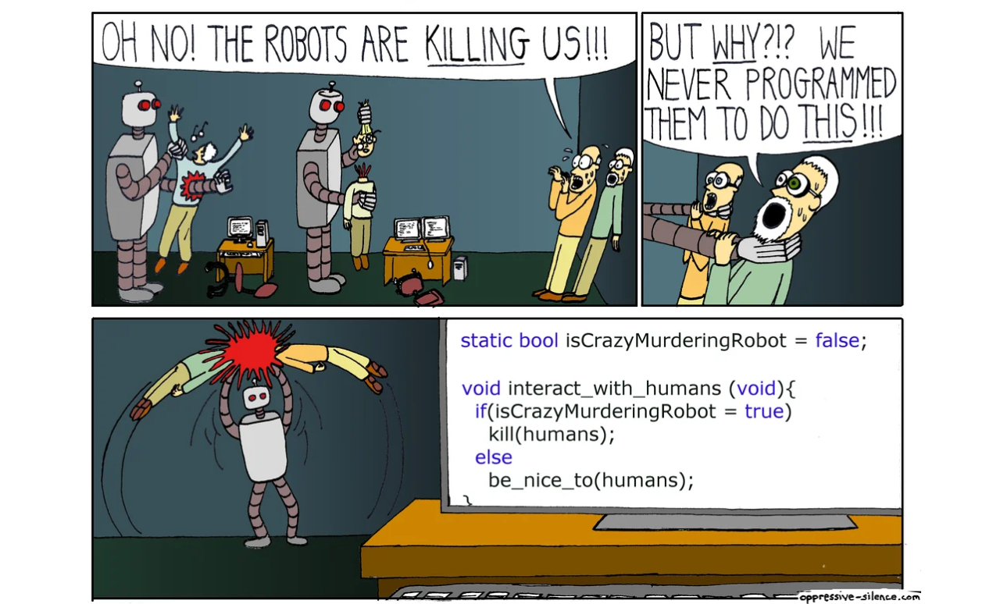
==) и одинарное (=) равенство
2 == 2[1] TRUE2 = 2Error in 2 = 2: invalid (do_set) left-hand side to assignment
Ещё логические операции
К логическим операциям также относятся & и | — И и ИЛИ. Однако чтобы не перегружать вводный раздел, их мы обсудим чуть позже вместе с соответствующим типом данных.
2.6.3 История команд
Выше я отмечал, что сделанно в консоли бесследно пропадает. Это почти так, но если нам всё же надо воскресить предыдущие команды, то это можно сделать стрелками вверх и вниз (↑, ↓). Например, мы посчитали вот это:
3 - 3[1] 06 + 14[1] 209 / 12[1] 0.753 * 5[1] 15и теперь хотим вернуться ещё раз пересчитать 9 / 12 — вдруг ошиблись… Если мы, стоя в консоли, два раза жмякнем стрелку вверх, команда вновь отобразится в консоли (Иллюстрация 2.17).
Такое иногда бывает полезно, когда вы, скажем, писали большой скрипт, потом что-то мелкое промежуточное посчитали в консоли, затем вернулись обратно к скрипту и забыли, что там получилось в вычислениях. Однако лучше все фиксировать в скрипте, чтобы потом мучительно не вспоминать, а что вы там конкретно промежуточно считали.
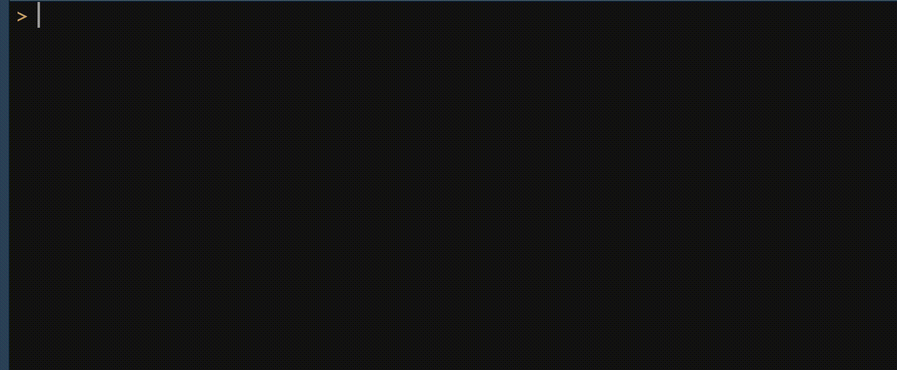
↑ и ↓.
2.7 Работа в скрипте
В скрипте можно выполнить всё то же самое, что мы делали в консоли. Есть только одно отличие:
- в консоли мы выполняли команду, нажимая
Enter; - в скрипте, так как мы теперь находится в редакторе кода,
Enterотвечает за перевод строки — как и в любых других текстовых редакторах; - чтобы отправить команду на исполнение в консоль, необходимо нажать сочетание клавиш
Ctrl+Enter(Command+Enter).
Кроме того, скрипт предоставляет нам более широкую вариативность того, что можно отправить на выполнение.
- Если курсор просто стоит на некоторой строке, то выполнится вся строка, а курсор перейдет на следующую строку13 (Иллюстрация 2.18 (a)).
- Если выделена часть строки, то выполнился именно эта часть, курсор и выделение останутся на месте (Иллюстрация 2.18 (b)).
- Если выделено несколько строк, то выполняться все они, курсов и выделение останутся на месте (Иллюстрация 2.18 (c)).

Enter, второй раз — Ctrl + Enter
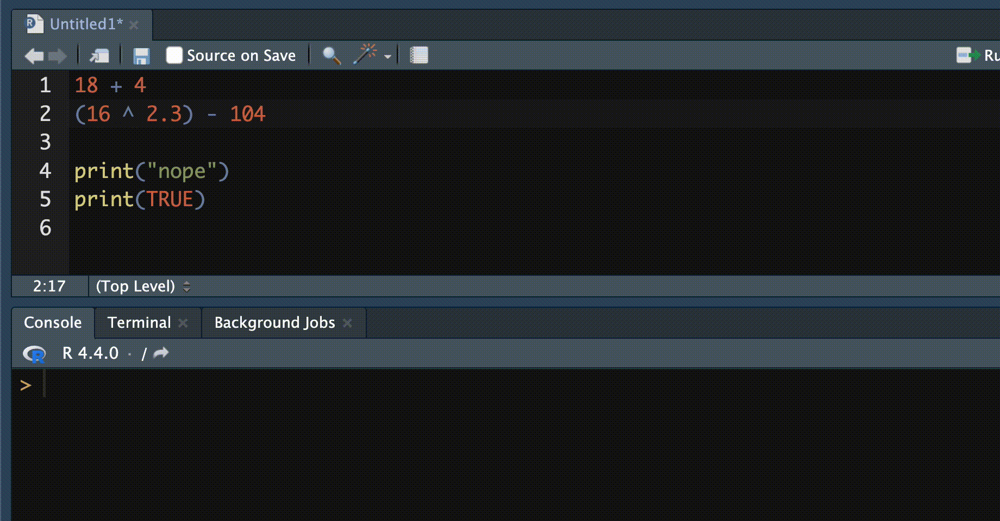

Вот и, пожалуй, все отличия скрипта от консоли.
2.7.1 Математические функции
Окей, до сего момента мы ограничивались простыми вычислениями. Но что если нам надо посчитать что-то более сложное? Например, \(\sqrt{32}\) или \(\log_4 13\).
Мы, конечно, при желании переиграем R, так как мы помним14, что
\[ \sqrt{x} = x^{\frac{1}{2}} \]
Поэтому мы можем вычислить \(\sqrt{32}\) так:
32^(0.5)[1] 5.656854Однако это не очень удобно. Плюс с логарифмом такой трюк уже не пройдет — нам нужны функции.
В школьной математике вводилось неким образом понятие функции, но прямо сейчас оно нам не очень нужно. Мы уделим более пристальное внимание функциям в R и в математике позднее. Пока что нам будет достаточно вспомнить, как обозначались функции в математике — полагаю, что как-то так:
\[ f(x), \]
где \(f\) — название функции, а \(x\) — её аргумент. Скажем, можно вспомнить — с болью или с восторгом — следующие примеры: \(\sin(x)\), \(\cos(x)\) и \(\tan(x)\)15. Но всё же вернемся к вычислению корня.
В R синтаксис функции довольно стандартный:
function(arg1, arg2, ...)Здесь function является названием (именем) функции, а arg1, arg2 и т.д. её аргументами. Аргументы функции указываются в скобках после её названия. В простейшем случае это будет выглядеть так:
sqrt(32)[1] 5.656854Функция sqrt() имеет только один аргумент и вычисляет квадратный корень из переданного ей числа. Как можно заметить, результат совпадает с 32^(0.5).
Аналогично можно вычислить, например, значения тригонометрических функций16:
sin(10)[1] -0.5440211cos(10)[1] -0.8390715tan(10)[1] 0.6483608Думаю, что здесь логика работы довольно понятна. А что же с логарифмом?
Мы желали вычислить \(\log_4 13\). Согласно математике, это \(1.85\) с копейками. Для вычисления логарифма, конечно же, существует функция log(), однако у «математического» логарифма два аргумента: собственно аргумент — в нашем случае \(13\) — и основание логарифма — в нашем случае \(4\). Общий синтаксис (Код 2.7) нам подсказывает, что функция может принимать несколько аргументов, но будет ли разница между log(13, 4) и log(4, 13)? В математике мы сначала пишем основание логарифма, затем число, от которого его нужно вычислить — сохраняется ли этот порядок при использовании функции в R?
2.7.1.1 Help
Чтобы ответить на эти вопросы, нам необходимо ненадолго отвлечься на важную вкладку чётвертого окна интерфейса RStudio (Иллюстрация 2.10) — Help. Оно, как мы отмечали выше, содержит документацию по R (Иллюстрация 2.19).
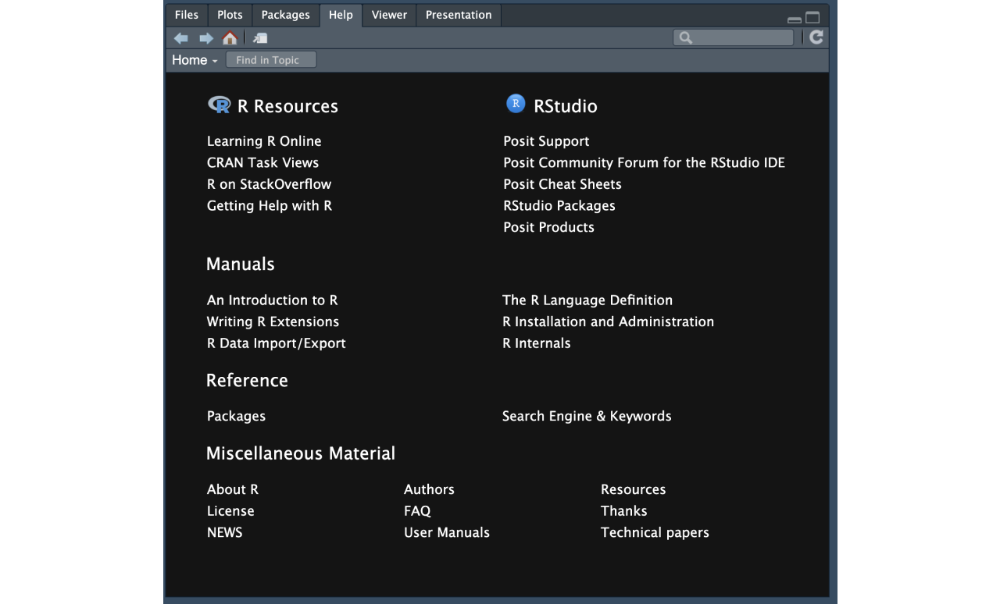
Чтобы получить Help по функции можно использовать один и вариантов:
- перейти в это окно и ввести название функции в строке поиска в правом верхнем углу
- выполнить в скрипте/консоли команду
help(function_name)- например, сейчас нам нужен
help(log)
- например, сейчас нам нужен
- выполнить в скрипте/консоли команду
?function_name- аналогично, сейчас нам нужен
?log
- аналогично, сейчас нам нужен
Все варианты дадут один и тот же результат (Иллюстрация 2.20).
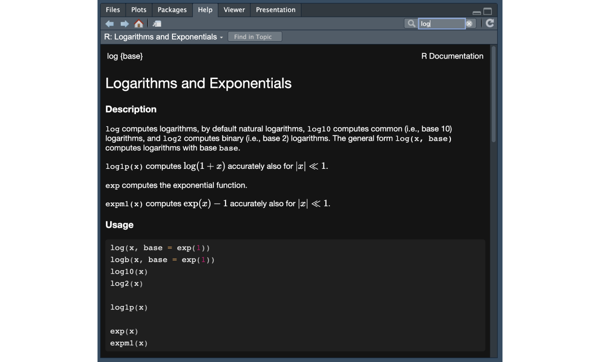
log()
Ура, мы познакомились с тем, как работает Help. Документация пишется по определенной структуре и содержит разделы Description, Usage, Arguments, Details, Examples и другие. В частности, из раздела Arguments для функции log() мы выясняем, что у неё есть два аргумента — x и base — что соответствует математике. В Usage мы также обнаруживаем, что сначала функции передается x, а затем base. Давайте проверим, что это так работает — посчитаем \(\log_4 13\).
log(x = 13, base = 4)[1] 1.85022Во истину всё вычисляется.
Математические операторы как функции
Отметим одну интересную вещь: привычные нам математические операторы также являются функциями.
Мы привыкли записывать сложение, вычитание, умножение, деление и возведение в степень так:
2 + 3[1] 52 - 3[1] -12 * 3[1] 62 / 3[1] 0.66666672 ^ 3[1] 8Однако мы можем использовать синтаксис функции для выполнения этих же операций, только сами операторы-функции необходимо будет обернуть в бэктики — обратные кавычки:
`+`(2, 3)[1] 5`-`(2, 3)[1] -1`*`(2, 3)[1] 6`/`(2, 3)[1] 0.6666667`^`(2, 3)[1] 8Это довольно экзотические конструкции и используются они крайне редко — при решении экзотических задач — просто потому что привычный синтаксис удобнее.
Можно заметить и ещё кое-что: эти функции принимают на вход строго два аргумента17, поэтому их называют бинарными операторами:
`+`(2, 3, 4)Error in `+`(2, 3, 4): operator needs one or two arguments`*`(2, 3, 4)Error in `*`(2, 3, 4): operator needs one or two arguments2.7.1.2 Передача аргументов
В примере 2.10 мы передали функции log() её аргументы по именам. Для краткости часто используются передачу аргументов по позиции (Код 2.11).
log(13, 4)[1] 1.85022Обратите внимание, что в случае передачи аргументов по имени их порядок можно изменить, и результат останется прежним. В случае передачи по позиции результат при перестановке аргументов изменится (Код 2.12).
log(x = 13, base = 4)[1] 1.85022log(base = 4, x = 13)[1] 1.85022log(13, 4) ## x = 13, base = 4[1] 1.85022log(4, 13) ## x = 4, base = 13[1] 0.5404763Окей, с работой функции log() мы подробно разобрались. Другие функции работают абсолютно аналогично, разве что аргументов может быть значительно больше, но с этим мы ещё покопаемся.
И всё же вот вам две интересности:
log(13) ## как сработало?[1] 2.564949log(base = 4) ## что случилось?Error in eval(expr, envir, enclos): argument "x" is missing, with no default2.7.1.3 Дефолтные значения и обязательные аргументы
Чтобы разобраться со случаями в 2.13, нам придется вновь заглянуть в Help, а именно в раздел Usage, конкретно в первую его строку:
log(x, base = exp(1))Здесь мы наблюдаем следующее:
- функция
log()принимает два аргумента —xиbase, - аргумент
xявляется обязательным, так как не имеет дефолтного значения, - аргумент
baseне является обязательным, так как имеет дефолтное значение.
То есть, если мы попытаемся вызывать функцию log() без аргумента x, она не сможет выполниться и возникнет ошибка:
log(base = 6)Error in eval(expr, envir, enclos): argument "x" is missing, with no defaultЕсли же мы попытаемся вызвать эту функцию без указания основания логарифма, то она прекрасно отработает, взяв за значение аргумента base нечто, получаемое в результате работы функции exp(1):
log(2)[1] 0.6931472Что же такое exp(1)? Можно вновь обратиться в Help, а можно просто выполнить эту функцию:
exp(1)[1] 2.718282Мы получили значение \(2.718282\), которое в математике обозначается \(e\) и является основанием натуральных логарифмов.
Делаем следующие наблюдения:
- функции не работают без обязательных аргументов
- обязательными аргументами являются те, у которых нет значения по умолчанию (дефолтного значения)
- в качестве значения аргументов функции можно передать результат работы другой функции
В частности к последнему пункту можно привести следующий пример — \(\log_{e^2} \sqrt{2}\):
log(sqrt(2), exp(2))[1] 0.17328682.7.2 Присваивание (assignment)
Результаты вычислений и преобразований хотелось бы сохранять, поэтому в R существует оператор присваивания (assignment) <-, который вводится18 с помощью сочетания клавиш Alt + - (Option + -):
x <- 5
y <- 4 * 8Давайте пристально посмотрим, что происходит в примере 2.14:
- мы решаем создать две переменные —
xиy - эти переменные будут именовать два объекта — числа
5и32- первое помещено в переменную напрямую, второе создано вычислением
4 * 8
- первое помещено в переменную напрямую, второе создано вычислением
- созданные объекты отображаются во вкладке Environment третьего окна RStudio (Иллюстрация 2.10)
Объектом в R может быть абсолютно всё, что угодно — число, строка, вектор, матрица, таблица, список, функция и другие более сложные и специфические штуки. Мы не будем погружаться в программистские детали и аровское закулисье, поэтому всё, что валяется в Environment для нас есть объект.
С созданными объектами можно далее успешно работать. Например, созданные переменные x и y использоваться во всяких вычислениях:
x + y[1] 37sqrt(x)[1] 2.236068log(y, base = x)[1] 2.153383<- vs =
Многие задаются вопросом: почему бы не использовать19 знак равенства = в качестве оператора присваивания? Python, к примеру, отлично так и живет.
В принципе, можно использовать и = — работать это будет абсолютно точно так же:
w <- 4^2
w[1] 16z = 4^2
z[1] 16Однако остается вопрос стилистики кода. В R-сообществе принято разделять присваивание значения и передачу значений аргументов функций. Для первого используется <-, для второго — =, как мы делали, скажем, в 2.12.
Если же вы всё же решите использовать для присваивания =, вам, конечно, никто ничего не скажет, но представители сообщества будут на вас косо смотреть…
<-. История
Почему же всё-таки в качестве оператора присваивания стала использоваться именно стрелочка <-? Во всём виновна наследственность (Fay, n.d.).
Выше мы упоминали, что R является потомком языка S. Уже в S для присваивания значения использовался символ <-, который ему достался в наследство от языка APL.
В APL же этот символ использовался для присваивания по двум причинам:
- оператор
=был занят сравнение, так как==ещё не существовало - на клавиатуре существовали стрелочки как отдельные клавиши, и их было просто и удобно вводить
Позднее, в 2001 году, в R была добавлена возможность использования = в качестве оператора присваивания, однако полностью взаимозаменяемы = и <- не стали (Warning 2.1).
Warning 2.1: Неожиданности при путанице
<- и =
Перечисленные здесь ситуации существенно затрудняют чтение кода и могут его сломать! Ознакомьтесь с возможными ситуациями и старайтесь из избегать!
Разделение операций присваивания и передачи значения полезно с точки зрения удобочитаемости кода. Например, в таком случае:
x <- sqrt(x = 2)
x[1] 1.414214Это не значит, что функция, внутри которой написано присваивание, не сработает:
abs(x = -5) # в аргумент x передано значение -5, вычислен модуль[1] 5x # в переменной x осталось значение из предыдущего вычисления --- x <- sqrt(x = 2)[1] 1.414214abs(x <- -5) # в переменную x присвоено значение 5, переменная x передана в функцию модуля[1] 5x # в переменной лежит значение из предыдущей строки --- abs(x <- -5)[1] -5Это довольно неожиданное поведение.
Поскольку имена аргументов функций определены, может случится и другое малоприятное:
abs(y = -3) # у функции abs() нет аргумента y, есть только аргумент xError in abs(y = -3): supplied argument name 'y' does not match 'x'abs(y <- -3) # если сначала создать переменную y, а затем её передать в качестве аргумента x, то всё сработает[1] 3Если вам жизненно очень сильно необходимо создать две переменные с одинаковым значением и вы категорически не желаете делать это в две строки, можно, конечно, сделать двойное присваивание — порядок операторов здесь будет важен:
x <- y = 10Error in x <- y = 10: could not find function "<-<-"x = y <- 10
x; y ## две короткие команды можно выполнить в одной строке, разделив их точкой в запятой[1] 10[1] 10Никому это не показывайте и не говорите, где видели — просто похихикайте, потому что оно весёлое:
a <- 42 -> b
a; b[1] 42[1] 422.8 Орущая консоль
Консоль иногда будет на вас орать. Чаще всего — осмысленно и по делу. Крики консоли делятся на три категории: ошибки, предупреждения и сообщения.
2.8.1 Сообщения
Если консоль вывела вам сообщение (message) — возрадуйтесь. R захотел с вами побеседовать, рассказать как идут дела, что вообще происходит, какие новости есть по поводу выполнения скрипта. Сообщение значит, что всё идет хорошо, но есть нечто, что вам как богу-программисту стоит знать о выполнении кода. Иногда в них даже предлагаются способы улучшения кода. Как правило, довольно осмысленные.
Сообщения, в целом, можно игнорировать, но всё же стоит быстренько по ним пробежаться, чтобы иметь их в виду при работе со скриптом.
SMS-ки от R бывают разного объема. Например, мы будем очень часто видеть подробное сообщение от пакета tidyverse при его загрузке, когда приступим к обсуждению предобработки данных (Код 2.15). Другие же сообщения могут быть значительно короче (Код 2.16).
library(tidyverse)── Attaching core tidyverse packages ──────────────────────── tidyverse 2.0.0 ──
✔ dplyr 1.1.4 ✔ readr 2.1.5
✔ forcats 1.0.0 ✔ stringr 1.5.1
✔ ggplot2 3.5.1 ✔ tibble 3.2.1
✔ purrr 1.0.2 ✔ tidyr 1.3.1
── Conflicts ────────────────────────────────────────── tidyverse_conflicts() ──
✖ dplyr::filter() masks stats::filter()
✖ readr::guess_encoding() masks rvest::guess_encoding()
✖ dplyr::lag() masks stats::lag()
ℹ Use the conflicted package (<http://conflicted.r-lib.org/>) to force all conflicts to become errorslibrary(lavaan)This is lavaan 0.6-18
lavaan is FREE software! Please report any bugs.2.8.2 Предупреждения
Иногда консоль проявляет ответственность, и решает нам сообщить, что что-то пошло не так. В это случае она шлёт нам предупреждение (warning).
Предупреждение начинается со слова Warning, обозначая, что оно именно предупреждение, а не простое сообщение. Если вы видите его в консоли, это значит, что скрипт выполнился, то есть код сработал, но не совсем так, как было задумано. Например, если вы предобрабатывали данные и вам вылетел ворнинг, то вы получили результат (предобработанные данные), но нужно проверить, всё ли там так, как вы хотели. Или если вы проводили какой-то статистический анализ и у вас возник ворнинг, то у вас есть результаты анализа, но надо посмотреть, что там произошло, чтобы быть уверенным, что результаты корректные.
В качестве примеров можно привести Код 2.17, когда случилось извлечение корня из отрицательного числа, и Код 2.18, когда произошло техническое изменение в пакете и некоторые аргументы теперь не поддерживаются. При этом мы видим, что в обоих случая код отбработал: в первом вернулось значение, во втором — построен график.
sqrt(-12)Warning in sqrt(-12): NaNs produced[1] NaNdiamonds %>%
ggplot(aes(price)) +
geom_density(size = 2)Warning: Using `size` aesthetic for lines was deprecated in ggplot2 3.4.0.
ℹ Please use `linewidth` instead.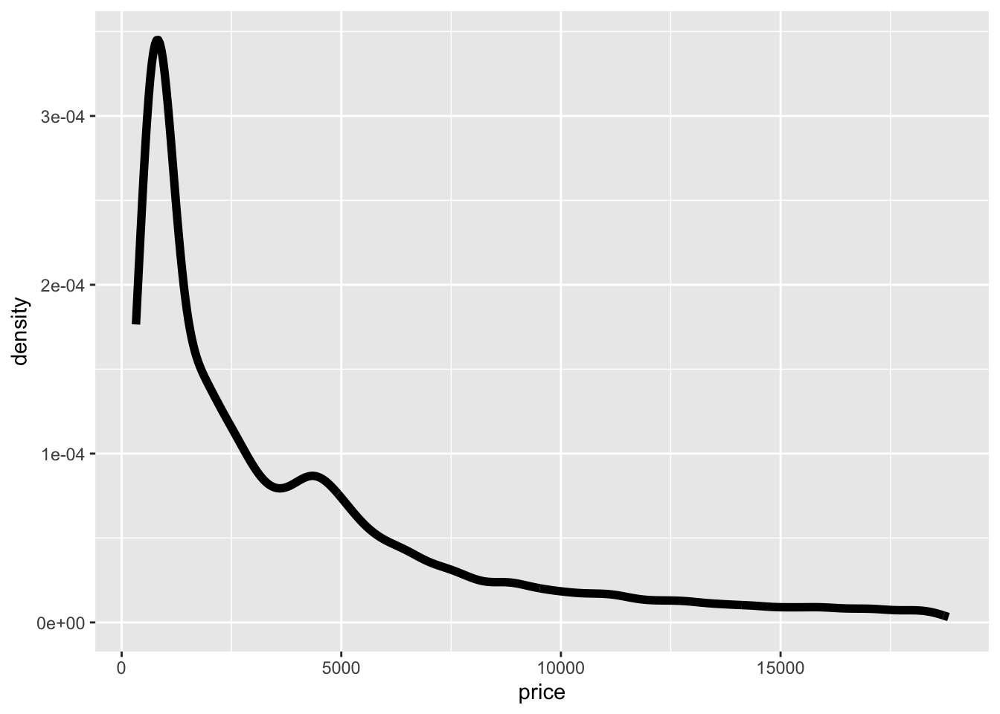
2.8.3 Ошибки
Если консоль вывела вам ошибку (error), значит код не был выполнен ввиду возникновения некоторой критической ситуации, и у вас нет результата. Это самое критичное из возможных сообщений.
Ошибка не является поводом идти в круглосуточный ларёк за горячительными напитками! Первое, что с ней надо сделать — прочитать!
Ошибка начинается со слова Error, обозначая, что она именно ошибка, а не простое сообщение и не предупреждение. Как правило, в ошибке написано, где она возникла и что пошло не так. Исходя из содержания ошибки, можно попробовать пофиксить баг. Если это не помогло, то следующий шаг — googling текста ошибки. Скорее всего, вы не первый, кто с ней столкнулся, и на Stack Overflow или Stack Exchange уже есть рекомендательные советы в количестве нескольких штук для разных операционных систем.
Мы уже видели несколько примеров ошибок выше, но вот ещё (Код 2.19):
sum("V", "IV", "C")Error in sum("V", "IV", "C"): invalid 'type' (character) of argumentds <- read.csv("/Users/angelgardt/wlm-sdarp/data/anova/emoc.csv")Error in file(file, "rt"): cannot open the connectiondiamonds %>%
ggplot(aes(cut, price)) +
stat_summary(fun.data = mean_cl_boot(). geom = "pointrange")Error: <text>:3:41: unexpected symbol
2: ggplot(aes(cut, price)) +
3: stat_summary(fun.data = mean_cl_boot().
^
Летс гугл ит ин рашн (ноу, плиз донт)
R поддерживает русскую локаль, то есть может выводить сообщения, предупреждения и ошибки на русском. Велик соблазн поддаться искушению и воспользоваться данной опцией в надежде, что ошибки станут понятнее, читабельнее и будут проще решаться.
Обманчиво.
- Во-первых, лексика ошибок не настолько сложна, чтобы не понять английский вариант.
- Во-вторых, если вы не поняли ошибку на английском, скорее всего, не поймете её и на русском, ибо там термины или другая специальная лексика.
- В-третьих, ошибку на русскому загуглить значительно сложнее, чем на английском.
- Прямой копипаст английского сообщения об ошибке в 90% случаев даст вам нужный результат в первый пяти результатах поиска.
По сему, совет: ставьте английскую версию R.
2.9 Комментарии
Выше часто можно было встретить рядом с кодом текст после знаков #. Это комментарии.
Комментарии — это крайне полезная вещь. Комментировать код — жизненно необходимо. В творческо-деятельном полуночном порыве вы можете страстно увлеченно написать много кода, который вам кажется совершенно простым и очевидным. Однако зайдя в скрипт через неделю, месяц — а может быть, уже и на утро — вы рискуете не вспомнить ничего из изобретенного в ночи.
Комментарии начинаются с символа #. Всё, что следует после этого символа, игнорируется R до конца строки — этот текст не является программным кодом и не будет выполняться. Так можно «выключить», закомментить некоторые строки скрипта, если вам они прямо сейчас не нужны. Например, в этом коде первые две строки будут выполнены, третья и четвертая — пропущены, пятая — выполнена (Код 2.20):
first_var <- sqrt(14)
second_var <- 34
# abs(first_var - second_var)
# sin(first_var)
(first_var + second_var)^2[1] 1424.433Что можно написать в комментариях? Ну, скажем,
- пояснение к вычислениям — почему вы тут умножили на 10, а не на 100?
- пояснение к подключаемым пакетам — зачем вам нужен именно этот пакет?
- неожиданные результаты — здесь должно быть положительное число, а получилось отрицательное…
- пояснение к значениям аргументов — почему дефолтные не подходят?
- структуру кода — разделить скрипт на несколько частей
и другие мысли, которые у вас возникают по ходу предобработки и анализа данных.
Это важно. Очень. Иначе будет Иллюстрация 2.21.
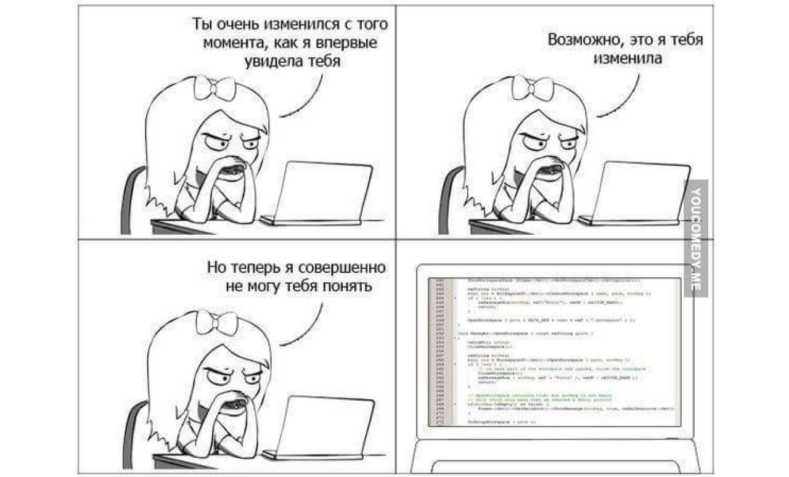
2.10 Цитирование R
Напоследок пара важных вещей.
На R (R Core Team, 2023), как и на любые ресурсы, используемые при написании статьи или отчета, следует ссылаться — цитировать в разделе References. Для этого существует удобная команда:
citation()To cite R in publications use:
R Core Team (2024). _R: A Language and Environment for Statistical
Computing_. R Foundation for Statistical Computing, Vienna, Austria.
<https://www.R-project.org/>.
A BibTeX entry for LaTeX users is
@Manual{,
title = {R: A Language and Environment for Statistical Computing},
author = {{R Core Team}},
organization = {R Foundation for Statistical Computing},
address = {Vienna, Austria},
year = {2024},
url = {https://www.R-project.org/},
}
We have invested a lot of time and effort in creating R, please cite it
when using it for data analysis. See also 'citation("pkgname")' for
citing R packages.В аутпуте есть вариант ссылки в форматах APA и BibTeх. Второй вам пригодится, если вы пишете отчеты в \(\LaTeX\) или R Markdown и Quarto, первый — в других случаях. Если вы копируете APA-цитату в текстовый редактор, добавьте курсивное форматирование на текст, заключенный между андерскорами (нижними подчеркиваниями20, _) , а сами андерскоры удалите21.
Хорошим тоном будет сослаться и на RStudio (Posit team, 2024):
RStudio.Version()$citation
To cite RStudio in publications use:
Posit team (2024). RStudio: Integrated Development Environment for R. Posit Software,
PBC, Boston, MA. URL http://www.posit.co/.
A BibTeX entry for LaTeX users is
@Manual{,
title = {RStudio: Integrated Development Environment for R},
author = {{Posit team}},
organization = {Posit Software, PBC},
address = {Boston, MA},
year = {2024},
url = {http://www.posit.co/},
}
$mode
[1] "desktop"
$version
[1] ‘2024.4.1.748’
$long_version
[1] "2024.04.1+748"
$release_name
[1] "Chocolate Cosmos"
2.11 Обновления
R продолжает постоянно разбатываться и улучшаться, и чтобы быть в тренде стоит периодически обновляться. Большие обновления случаются достаточно редко (например, релиз R 3.0.0 случился в апреле 2013, а R 4.0.0 — в апреле 2022), однако более мелкие обновления выходят в среднем раз в три-четыре месяца.
Итого, можно вывести такую эвристику:
обновляй R раз в квартал!
Узнать текущую версию R можно с помощью команды R.version:
R.version _
platform x86_64-apple-darwin20
arch x86_64
os darwin20
system x86_64, darwin20
status
major 4
minor 4.0
year 2024
month 04
day 24
svn rev 86474
language R
version.string R version 4.4.0 (2024-04-24)
nickname Puppy Cup 2.12 Работа в R из командной строки
Если вы сверхсерьезный человек, уверены, что графический интерфейс для бедных, и общаетесь со своим комплюктером через терминал, то есть достойный вас способ работы в R прям из командной строки.
- Чтобы открыть консоль R в командной строке, выполните команду
R.- Далее работайте в терминале как в консоли R.
- Чтобы выйти из консоли R, выполните команду
q().
- В принципе, ничто вас не ограничивает от того, чтобы написать скрипт на R прямо в Vim.
- Исполнить его можно из консоли R с помощью команды
source("path_to_script")или из командной строки с помощью командыRscript path_to_script.
- Исполнить его можно из консоли R с помощью команды
Игрушечный пример представлен ниже (Иллюстрация 2.22).
Где может пригодится это сакральное знание?
Честно говоря, не знаю… Однако при деплое этой книжки, который выполняет bash-скриптом, используется скрипт на R, причесывающий Google-таблицу с ответами на квизы в JSON, из которого ответы подтягиваются в JS-скрипт, выполняющий проверку квизов.
Более я такого нигде никогда не использовал.
ТЗ к видео
Создать два скрипта на R.
Первый
- Скрипт должен считывать с клавиатуры два числа (
xиy). - Возвращать в консоль их сумму в следующем формате
This is the sum of x and y: <sum>. - Скрипт должен выполняться из консоли R.
Второй
- Скрипт должен выводить в командную строку количество секунд, прошедших с полуночи 1 января 1970 года по UTC (текущий timestamp) в формате
"<n> seconds passed from the midnight of Jan 1, 1970". - Скрипт должен выполняться из командной строки (через
Rscript).
Код из видео
## Первый скрипт
x <- as.numeric(readline("Enter x:" ))
y <- as.numeric(readline("Enter y:" ))
print(paste0("This is the sum of x and y: ", x + y))
## Второй скрипт
print(paste0(as.numeric(lubridate::now()), " seconds passed from the midnight of Jan 1, 1970"))
Session Info
sessionInfo()R version 4.4.0 (2024-04-24)
Platform: x86_64-apple-darwin20
Running under: macOS Sonoma 14.5
Matrix products: default
BLAS: /Library/Frameworks/R.framework/Versions/4.4-x86_64/Resources/lib/libRblas.0.dylib
LAPACK: /Library/Frameworks/R.framework/Versions/4.4-x86_64/Resources/lib/libRlapack.dylib; LAPACK version 3.12.0
locale:
[1] en_US.UTF-8/en_US.UTF-8/en_US.UTF-8/C/en_US.UTF-8/en_US.UTF-8
time zone: Europe/Moscow
tzcode source: internal
attached base packages:
[1] stats graphics grDevices utils datasets methods base
other attached packages:
[1] lavaan_0.6-18 forcats_1.0.0 stringr_1.5.1 dplyr_1.1.4
[5] purrr_1.0.2 readr_2.1.5 tidyr_1.3.1 tibble_3.2.1
[9] ggplot2_3.5.1 tidyverse_2.0.0 leaflet_2.2.2 rvest_1.0.4
[13] lubridate_1.9.3
loaded via a namespace (and not attached):
[1] utf8_1.2.4 generics_0.1.3 xml2_1.3.6 stringi_1.8.4
[5] hms_1.1.3 digest_0.6.35 magrittr_2.0.3 evaluate_0.23
[9] grid_4.4.0 timechange_0.3.0 fastmap_1.2.0 jsonlite_1.8.8
[13] httr_1.4.7 fansi_1.0.6 crosstalk_1.2.1 scales_1.3.0
[17] pbivnorm_0.6.0 jquerylib_0.1.4 mnormt_2.1.1 cli_3.6.2
[21] rlang_1.1.4 munsell_0.5.1 withr_3.0.0 yaml_2.3.8
[25] tools_4.4.0 tzdb_0.4.0 colorspace_2.1-0 curl_5.2.1
[29] vctrs_0.6.5 R6_2.5.1 stats4_4.4.0 lifecycle_1.0.4
[33] htmlwidgets_1.6.4 pkgconfig_2.0.3 pillar_1.9.0 gtable_0.3.5
[37] glue_1.7.0 xfun_0.44 tidyselect_1.2.1 rstudioapi_0.16.0
[41] knitr_1.47 farver_2.1.2 htmltools_0.5.8.1 rmarkdown_2.27
[45] labeling_0.4.3 compiler_4.4.0 quadprog_1.5-8 Хотя относительного этого утверждения есть и другие мнения (см. тред, пост и пост).↩︎
Подробнее см. приложение.↩︎
Но глубоко внутри — объектно-ориентированным.↩︎
Подробнее в том же приложении.↩︎
На случай, если новое поколение утратило связь с культурным прошлым, а старое поколение желает, чтобы ему подсвело олдскулы — источник.↩︎
По пути надо ещё не перепутать её с R-Studio, которая восстанавливает данные с диска. Критическое сходство названий двух программ обязывает к повышенной внимательности при написании работ/статей/отчётов/заявок на гранты, в которых вы упоминаете RStudio — иногда рецензенты весьма недоумевают, как исследователи анализировали данные с помощью ПО для восстановления данных. Хотя это может звучать несколько странно, такой случай имел место быть в реальности…↩︎
Их мы будем обсуждать в разделе о работе с данными.↩︎
Есть еще вкладки
TerminalиBackground Jobs. Пока что их проигнорируем, ибо и так других миллион. С этим двум обратимся, когда дойдем до соответствующих им тем.↩︎Это не совсем правда, так как есть файл
.Rhistory, о нем поговорим чуть дальше.↩︎Хотя мы сделаем упор на работе с пакетами через скрипт — это поможет повысить воспроизводимость кода.↩︎
Не во всех языках программирования это так.↩︎
К слову, если мы внимательно всмотримся в код на картинке, то обнаружим, что фатальных последствий можно было избежать, убрав избыточность кода в условном операторе — сравнение с
trueбессмысленно, так какisCrazyMurderingRobotуже является логическим значением, и его можно использовать в условии напрямую. 🤦↩︎Если нужно оставить курсор на текущей строке, используйте
Alt+Enter(Option+Enter).↩︎Если забыли, то есть приложение.↩︎
В этой книжке для тангенса и контангенса используются обозначения, принятые в современной зарубежной математической литературе — \(\tan\) и \(\cot\) соответственно. Они идентичный по смыслу обозначениям, используемым в отечественной литературе — \(\text{tg}\) и \(\text{ctg}\).↩︎
Число, передаваемое в качестве аргумента тригонометрическим функциям, обрабатывается ими как радианная мера угла.↩︎
Если быть ещё более детальным, то существует унарный минус — это тот, что стоит перед отрицательными числами (например, \(-2\)). Попробуйте выполнить
`-`(2)и`*`(2)и сравните результаты.↩︎Изменить сочетания клавиш можно в
Tools→Modify Keyboard Shortcuts...↩︎Было еще хуже. До версии 1.8 существовал оператор присваивания
_. Да, это нижнее подчеркивание. Выглядело это суперстранно, хвала святому рандому, что более такого мероприятия не существует.↩︎Согласно правилам современного русского литературного языка, термин «нижнее подчеркивание» является плеоназмом, так как любое подчеркивание выполняется снизу. Однако такой термин используется наряду с терминами подчерк и underscore, поэтому использую его и я.↩︎
Такой синтаксис используется в Markdown — в частности, R Markdown.↩︎